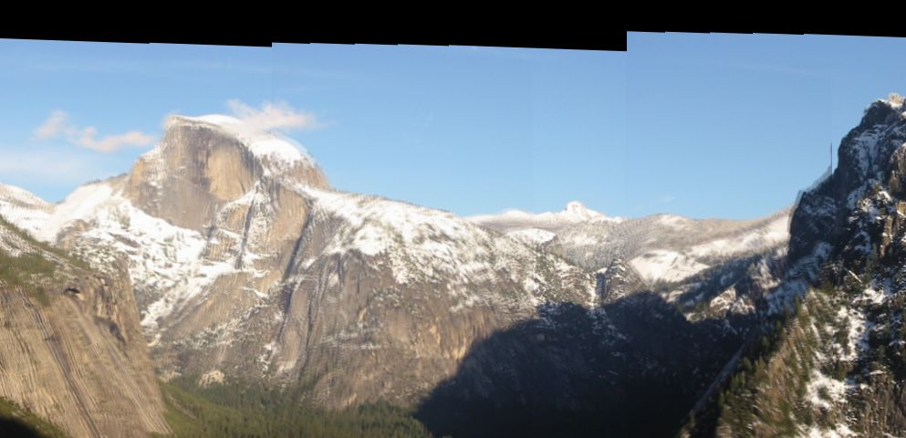
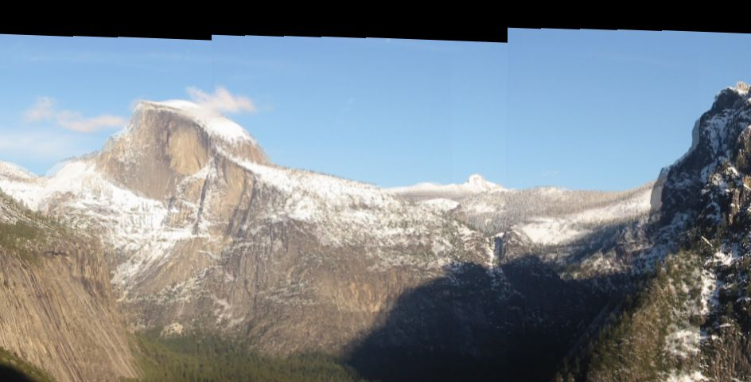
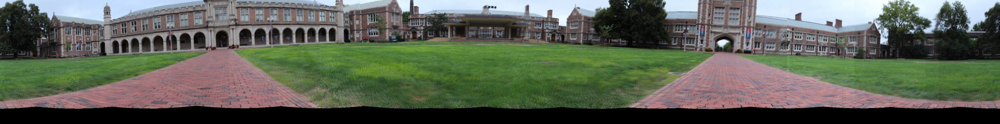

I followed the routine on course
website to create panorama.
1. Transform flat images to spherical
warp images and extract features. I tried using my self defined feature
from project 1 in test image yosemite and found standard SIFT feature
outperformed so I turned to SIFT feature in later 2 panorama tasks.
2. Match adjacent images with their features.
3. Use RANSAC to determine best transform matrix parameters between every image
pair. Because our camera only applies rotation motion, transform
between each pair is then translation only.
4. Stitch images
together and adjust their vertical positions proportional to distance
from the first image's center to make all images on the same height.

using SIFT feature to stitch yosemite images

using self-defined (mops+gradient) feature to stitch yosemite images
Even the SIFT feature was not perfect in this task while it is
much better than my self-defined feature. The dismatch pixels may come
from wrong feature matches and
improper image warp(or radial distortion removal).
(1) campus
 High Resolution
(2) my photo
High Resolution
(2) my photo

High Resolution
Stitch worked well on (1) image, there are few dismatch pixels but the brightness of the images is inconsistent.
Stitch worked not so well on (2) image, ghosts and dismatch pixels
exist. This is because I did not do radial distortion removal on my own
photos and there are probably several wrong feature matches which
degradates translation prediction. But the brightness is very balance
this time.(I took photos with a small elevation angle which made
images looked a little uncomfortable).